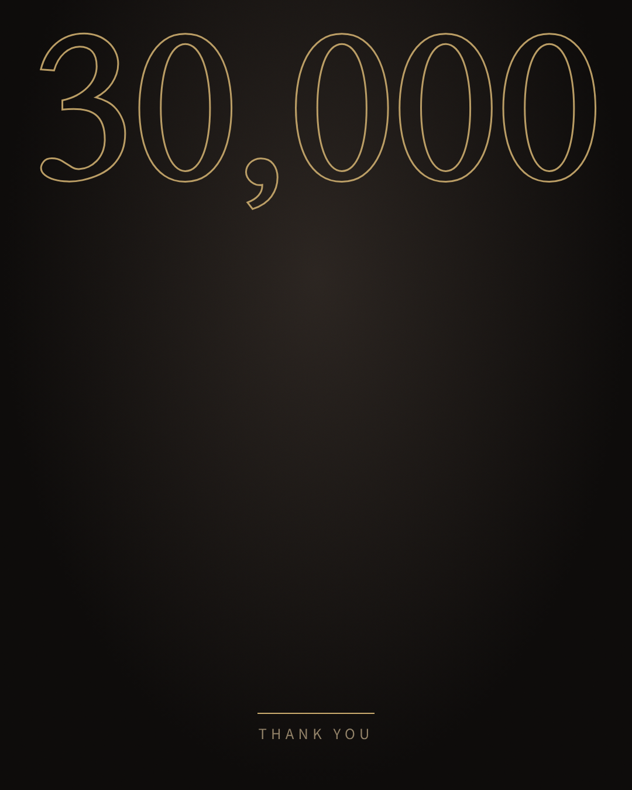
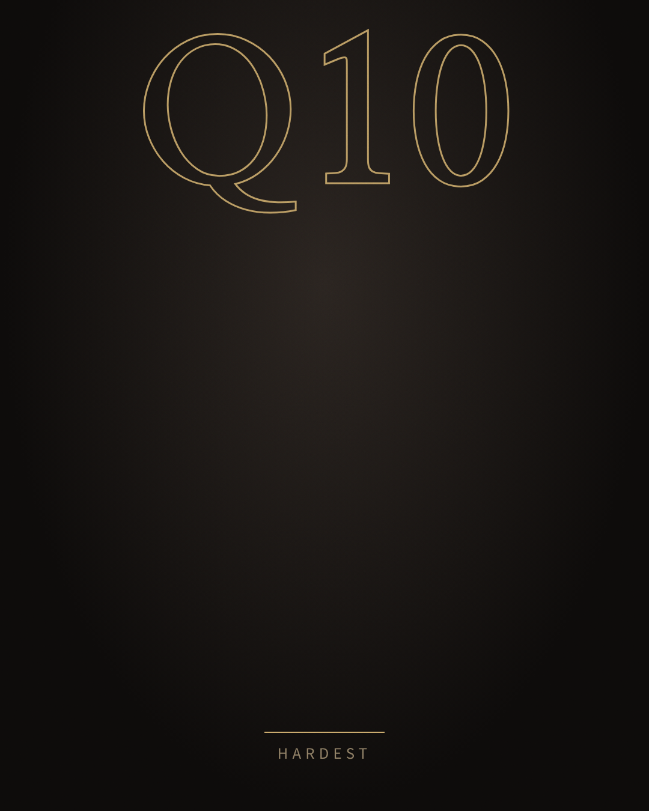
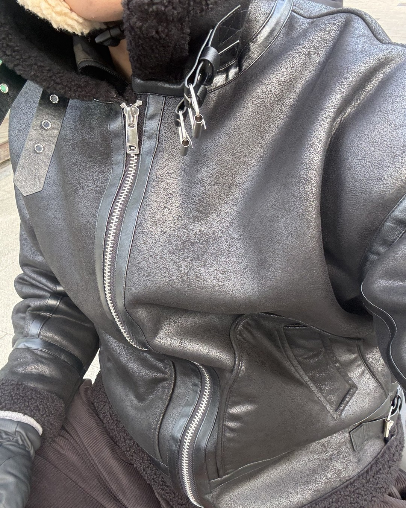

팔로워 3만 감사 이벤트
남자어 번역 퀴즈 10
(1등 오마카세 런치 20만 원 상당)
1/20
@mszexc
넘겨보세요 →

여러분 덕분에 3만이 됐어요.
그래서 9분께 선물을 드려요.
(남자가 하는 말, 이번엔 여러분이 번역해 주세요.)
2/20
@mszexc
팔로워 3만 감사 이벤트

🥇 1등 · 1명
오마카세 런치 식사권 (20만 원 상당)
🥈 2등 · 1명
오뎅바 식사권 (10만 원 상당)
🥉 3등 · 1명
와인바 이용권 (5만 원 상당)
3/20
@mszexc
팔로워 3만 감사 이벤트

4등 · 1명
스타벅스 3만 원권
5등 · 5명
스타벅스 아메리카노
(한 분당 한 가지 상품만 받을 수 있어요.)
4/20
@mszexc
팔로워 3만 감사 이벤트

참여 방법
① 팔로우 + 댓글에 갖고 싶은 상품 번호
→ 4 · 5등 추첨 (예: "1" · 숫자 하나면 돼요)
② 같은 댓글에 친구 1명 태그 + 정답 DM
→ 1~3등 도전
5/20
@mszexc
팔로워 3만 감사 이벤트

1~3등은 이렇게 정해요.
🥇 10개 만점 + 주관식 번역이 가장 좋은 1명
🥈 10개 만점 중 추첨
🥉 8개 이상 맞힌 분 중 추첨
(만점자가 없으면 가장 많이 맞힌 분 중에서 뽑아요.)
6/20
@mszexc
팔로워 3만 감사 이벤트

Q1. 좋아하는 여자에게
집에 도착하면, 먼저 보내는 말은?
① "뭐 해?"
② "나 도착."
③ "자?"
④ "피곤해"
7/20
@mszexc
팔로워 3만 감사 이벤트

Q2. 썸 · 연애 초기
확신 있는 남자는 "천천히" 대신 뭐라고 할까?
① "언제"
② "사랑해"
③ "미안해"
④ "우리"
8/20
@mszexc
팔로워 3만 감사 이벤트

Q3. 연인 사이 · 서운한 일이 있던 날
그가 "괜찮아."라고 한다면?
① 정말 괜찮다
② 귀찮다
③ 화가 났다
④ 서운한데, 말하면 쪼잔해 보일까 봐 접는 것
9/20
@mszexc
팔로워 3만 감사 이벤트

Q4. 오래 만난 연인 · 기념일
마음이 식은 남자가 하는 말은?
① "작년에 그거 좋아했잖아."
② "아, 오늘이었어?"
③ "이번엔 내가 예약했어."
④ "뭐 갖고 싶은지 고민했어."
10/20
@mszexc
팔로워 3만 감사 이벤트

Q5. 헤어지자는 말에 그가 붙잡을 때
진심인 붙잡음은 무엇으로 증명될까?
① 눈물
② 긴 사과문
③ 선물
④ 달라진 다음 날
11/20
@mszexc
팔로워 3만 감사 이벤트

Q6. 연인에게 다른 여자가 생기면
휴대폰보다 먼저 바뀌는 것이 아닌 것은?
① 칭찬과 선물이 갑자기 는다
② 잠금 화면을 바꾼다
③ 내 일정을 자세히 묻는다
④ 작은 질문에도 예민해진다
12/20
@mszexc
팔로워 3만 감사 이벤트

Q7. 헤어진 뒤
다시 연락하기 전에 하는 행동이 아닌 것은?
① 스토리를 빠짐없이 본다
② 공통 친구에게 안부를 묻는다
③ 새 연애를 SNS에 공개한다
④ 둘만 아는 걸 SNS에 올린다
13/20
@mszexc
팔로워 3만 감사 이벤트

Q8. 썸 · 연인, 읽씹 뒤 늦게 온 답장
"답할 마음이 줄어든" 남자의 답장은?
① 하루 넘게 늦게 온 답장
② 늦었지만 내 질문에 답한 답장
③ 내 질문은 건너뛰고, 아무 일 없던 듯한 답장
④ 미안하다며 늦은 이유를 말한 답장
14/20
@mszexc
팔로워 3만 감사 이벤트

Q9. 연인 사이 · 관계를 끝낼 때
마음 정리를 끝낸 남자의 진짜 신호는?
① 화를 자주 낸다
② 전보다 더 자주 연락한다
③ 갑자기 조용하고 친절해진다
④ 먼저 "헤어지자"고 한다
15/20
@mszexc
팔로워 3만 감사 이벤트

Q10. 읽씹하던 남자가 다시 연락할 때
맞는 것을 모두 고르면?
ㄱ. 핑계(링크 · 사진)가 생기면 연락한다
ㄴ. 내가 연락을 더 자주 할수록 빨리 돌아온다
ㄷ. 밤에 온 "자?"는 마음보다 외로움일 때가 많다
ㄹ. 다시 온 연락이 나에게 질문을 하면 진심이다
① ㄱ, ㄴ ② ㄱ, ㄷ, ㄹ
③ ㄴ, ㄷ, ㄹ ④ ㄱ, ㄴ, ㄷ, ㄹ
16/20
@mszexc
팔로워 3만 감사 이벤트

보너스 · 주관식 (선택)
"요즘 좀 바빠."
남자 입장에서 한 줄로 번역해 보세요.
(1등은 만점자 중 이 답이 가장 좋은 분께 드려요.)
17/20
@mszexc
팔로워 3만 감사 이벤트

정답은 DM으로 보내주세요.
번호 10개를 순서대로 + 주관식 한 줄
(댓글에 정답을 쓰면 다른 분들께 보여서 제외돼요.)
18/20
@mszexc
팔로워 3만 감사 이벤트

꼭 확인하세요
비공개 · 가계정 · 게시물 3개 미만은 제외
기간 중 팔로우를 취소하면 제외
한 사람이 여러 계정으로 참여하면 모두 제외
(만 19세 이상만 참여할 수 있어요.)
19/20
@mszexc
팔로워 3만 감사 이벤트

정답은 전부, 이 계정 게시물 안에 있어요.
3만 명, 정말 고마워요.
응모 기간 · 발표는 캡션에 있어요
20/20
@mszexc
팔로워 3만 감사 이벤트